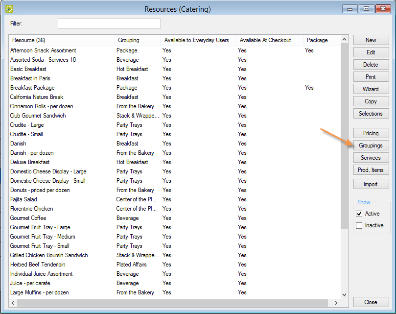
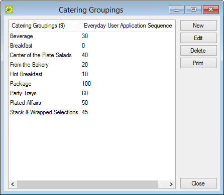

Configuring Groupings for a Resource
Within a category, you can organize resources by Groupings. For example, you might configure Beverages, Entrees, and Desserts groupings for a Food Service category. The Beverage grouping might contain resources such as soda and coffee, the Entrees grouping might contain resources such as fish and beef, and so on. You can configure groupings for a category at the time that you are configuring resources for the category, or you can carry out the configuration as a separate activity.
- On the EMS menu bar, click Configuration > Resources. A list of all the categories that are currently configured in your EMS database and for which you can configure resources opens.
- Select the category for which you are configuring the grouping. The Resources window opens. This window lists all the resources that are currently configured in your EMS database for the selected category and that have a status of Active.
Resources Window

- Optionally, do one or both of the following:
- To view all resources for the category in your EMS database, regardless of status, under Show, click Inactive.
- To filter the displayed resources based on the Resource name, in the Filter field, enter a search string.
- Click Groupings. The Groupings window opens. This window lists all the groupings that are currently configured in your EMS database for the selected category.
Groupings Window

- Click New. The Grouping dialog box opens.

- In the Grouping field, enter a name or description for the new grouping(maximum 50 characters, including spaces).
- In the Sequence field, enter a number that determines the order in which the groupings are displayed in EMS Web App. Groupings are ordered from lowest to highest sequence number, with the grouping with the lowest sequence number being displayed first. If you leave the sequence set to the default value of zero for all groupings, then by default, the groupings are displayed alphabetically.
- Click OK. The Grouping dialog box closes. You return to the Grouping window with the newly configured grouping automatically selected.
- Click Close. The Grouping dialog box closes. The Resources dialog box remains open.
- Optionally, see Configuring Resources for a Category.